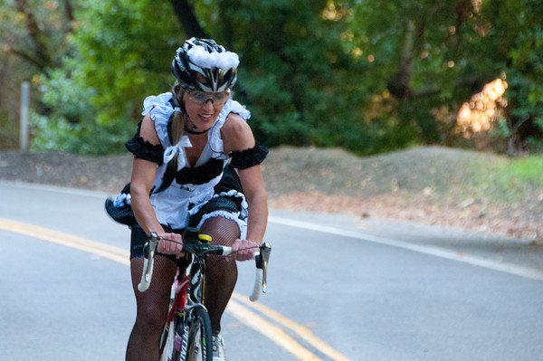

Low-Key Hillclimbs Aggregate Results:
Palomares Road
generated Fri Nov 4 10:34:15 PDT 2016
|
|  |
| 2011 week 5: Best costume winner and top woman Lisa Penzel (Franz Kelsch) |
Results are listed here from the Low-Key archives, sorted by time for each climb. Some years start and/or finish time differ slightly, such as
with Kings Mt Road where after 1995 the start moved from Entrance Way to Greer.
Results are ranked by time first, score second.
Score is calculated using a simple percent-of-median-speed
formula, with time adjustments for division. These scores will generally differ from those calculated in the results for that particular year, since
the scoring scheme has evolved. Tandems are split between 1998, when they were counted as single participants, and other years, when the individual
riders have been counted separately
Results for Men
| rank | time | score | rider | cat | team | year | week | code |
|---|
| 1 | 17:00 | 122.605 | McLovin | 1 | The Brown Zone | 2011 | 5 | |
| 2 | 17:01 | 122.484 | Tracy Colwell | 40+ | Team Colwell | 2011 | 5 | |
| 3 | 17:05 | 122.006 | Jacob Berkman | 30+ | Dolce Vita Cycling | 2011 | 5 | |
| 4 | 17:07 | 121.769 | Mario Hernandez | 3 | Audi | 2011 | 5 | |
| 4 | 17:07 | 121.769 | Brian Lucido | Tandem | Sr's & Mr's of No Mercy | 2011 | 5 | |
| 4 | 17:07 | 121.769 | Daniel Connelly | 3 | Low-Key | 2011 | 5 | |
| 4 | 17:07 | 121.769 | Carl Nielson | 50+ | Sr's & Mr's of No Mercy | 2011 | 5 | |
| 4 | 17:07 | 121.769 | Clark Foy | 45+ | San Jose Bike Club | 2011 | 5 | |
| 9 | 17:11 | 121.296 | Nils Tikkanen | Honey Badger | Bike Trip/Symantec | 2011 | 5 | |
| 10 | 17:13 | 121.062 | Tim Clark | 40+ | Low-Key | 2011 | 5 | |
| 11 | 17:20 | 120.247 | Mark Edwards | 50+ | Bike Trip/Symantec | 2011 | 5 | |
| 12 | 17:28 | 119.329 | Steve Peck | 45+ | Western Wheelers | 2011 | 5 | |
| 13 | 18:07 | 115.047 | Ronald Brunner | Low-Key | The Brown Zone | 2011 | 5 | |
| 13 | 18:07 | 115.047 | Dave Blizard | 40+ | Pen Velo/Pomodoro | 2011 | 5 | |
| 15 | 18:11 | 114.626 | James Porter | 3 | Western Wheelers | 2011 | 5 | |
| 16 | 18:13 | 114.416 | Tom Gardin | 45+ | | 2011 | 5 | |
| 17 | 18:15 | 114.207 | Rune Dahl | 45+ | Western Wheelers | 2011 | 5 | |
| 18 | 18:17 | 113.999 | J.D. Daniels | 35+ | Eden Bicycles | 2011 | 5 | |
| 19 | 18:22 | 113.481 | Andy Crews | 40+ | Diablo | 2011 | 5 | |
| 20 | 18:24 | 113.276 | Dai Sieh | Robusto | The Brown Zone | 2011 | 5 | |
| 21 | 18:31 | 112.562 | Paul McKenzie | 55+ | Marc Pro - Strava | 2011 | 5 | |
| 22 | 18:35 | 112.158 | Bill Brier | 45+ | Team Fremont FFBC p/b Chipotle | 2011 | 5 | |
| 23 | 18:36 | 112.058 | Joe Sullivan | 35+ | San Jose Bike Club | 2011 | 5 | |
| 24 | 18:44 | 111.260 | Joe Fant | 50+ | San Jose Bike Club | 2011 | 5 | |
| 25 | 18:53 | 110.377 | Daryl Spano | 45+ | San Jose Bike Club | 2011 | 5 | |
| 26 | 18:58 | 109.892 | David Nader | 40+ | Pen Velo/Pomodoro | 2011 | 5 | |
| 26 | 18:58 | 109.892 | Justin Lucke | Plant Based | LGBRC | 2011 | 5 | |
| 28 | 19:20 | 107.807 | David Malachowski | | Eden Bicycles | 2011 | 5 | |
| 29 | 19:28 | 107.069 | KP | None Of Your Bee's Wax | The Brown Zone | 2011 | 5 | |
| 30 | 19:31 | 106.795 | Klaus Fleischmann | 40= | | 2011 | 5 | |
| 31 | 19:32 | 106.704 | Alexander Komlik | 45+ | San Jose Bike Club | 2011 | 5 | |
| 32 | 19:33 | 106.613 | Tick Houk | 50+ | The Brown Zone | 2011 | 5 | |
| 33 | 19:34 | 106.522 | Jim Langley | 55+ | Bike Trip/Symantec | 2011 | 5 | |
| 34 | 19:35 | 106.431 | Chris Furgiuele | 35+ | Dolce Vita Cycling | 2011 | 5 | |
| 35 | 19:38 | 106.160 | Shance Ordell | 35+ 123 | Western Wheelers | 2011 | 5 | |
| 35 | 19:38 | 106.160 | Dennis Pedersen | 50+ | Bike Trip/Symantec | 2011 | 5 | |
| 37 | 19:41 | 105.890 | Martin Hyland | 55+ | Western Wheelers | 2011 | 5 | |
| 38 | 19:43 | 105.711 | Dave Rossow | 40+ | Western Wheelers | 2011 | 5 | |
| 39 | 19:46 | 105.444 | Bennett Chi Lee | 45+/Ponytail | Speedy Bees | 2011 | 5 | |
| 40 | 19:55 | 104.650 | Gino Cetani | 40+ | Heavy Metal | 2011 | 5 | |
| 41 | 20:02 | 104.040 | Erik Salander | 50+ | Pen Velo/Pomodoro | 2011 | 5 | |
| 42 | 20:16 | 102.843 | Jonathan Sek | 55+ | San Jose Bike Club | 2011 | 5 | |
| 43 | 20:17 | 102.758 | TOM FERREIRA | 45+ | Eden Bicycles | 2011 | 5 | |
| 44 | 20:19 | 102.589 | Chuck Spiteri | 50+ | Pen Velo/Pomodoro | 2011 | 5 | |
| 45 | 20:28 | 101.838 | Scott Martin | 50+ | Bike Trip/Symantec | 2011 | 5 | |
| 46 | 20:29 | 101.755 | Dean Larson | 45+ | The Brown Zone | 2011 | 5 | |
| 47 | 20:33 | 101.425 | West Kurihara | 50+ | Team Fremont FFBC p/b Chipotle | 2011 | 5 | |
| 48 | 20:34 | 101.342 | Thomas Rabedeau | 50+ | SLACer | 2011 | 5 | |
| 49 | 20:41 | 100.771 | Doug Reynolds | 60+ | Alberto's Steak House | 2011 | 5 | |
| 50 | 20:51 | 99.965 | Giles Douglas | 35+ | Google | 2011 | 5 | |
| 50 | 20:51 | 99.965 | Naoto Sato | 45+ | | 2011 | 5 | |
| 50 | 20:51 | 99.965 | Vinay Ravuri | | Georgia Tech | 2011 | 5 | |
| 50 | 20:51 | 99.965 | Brandon Iles | 25+ | Google | 2011 | 5 | |
| 54 | 20:53 | 99.806 | Alan Weatherall | | San Jose Bike Club | 2011 | 5 | |
| 55 | 21:09 | 98.547 | Philip Clark | 25+ | Google | 2011 | 5 | |
| 56 | 21:11 | 98.392 | Takanobu seimiya | 40+ | Nikon Cycling Club | 2011 | 5 | |
| 57 | 21:23 | 97.472 | Greg Juneau | 40+ | LGBRC | 2011 | 5 | |
| 58 | 21:35 | 96.569 | David Vrane | 45+ | Sr's & Mr's of No Mercy | 2011 | 5 | |
| 59 | 21:36 | 96.494 | Robert Zeljko | 40+ | | 2011 | 5 | |
| 60 | 21:43 | 95.976 | Jon Degenhardt | 50+ | Alameda Velo | 2011 | 5 | |
| 61 | 21:44 | 95.902 | MichaelsJ. Andalora | 55+ | | 2011 | 5 | |
| 62 | 21:45 | 95.829 | Jeff Shute | 30+ | Google | 2011 | 5 | |
| 63 | 21:48 | 95.609 | Jens Weber | 30+ | Doogie | 2011 | 5 | |
| 64 | 21:53 | 95.245 | Vince Cummings | 50+ | Alberto's Steak House | 2011 | 5 | |
| 65 | 22:27 | 92.841 | Eric Brouillette | 45+ | Eden Bicycles | 2011 | 5 | |
| 66 | 22:39 | 92.021 | Richard Contreras | 50+ | Team Rhus | 2011 | 5 | |
| 67 | 22:40 | 91.953 | Jim Williams | 60+ | Alberto's Steak House | 2011 | 5 | |
| 68 | 22:43 | 91.751 | Roger Helmers | 55+ | Central Valley Velo | 2011 | 5 | |
| 69 | 22:52 | 91.149 | Michael Riepe | 40+ | Alto Velo | 2011 | 5 | |
| 70 | 22:57 | 90.818 | Mike James | | Pen Velo/Pomodoro | 2011 | 5 | |
| 71 | 23:02 | 90.490 | Frank Drobot | 60+ | | 2011 | 5 | |
| 72 | 23:27 | 88.882 | Craig Peters | 40+ | Tradewinds Cycling Team | 2011 | 5 | |
| 73 | 23:34 | 88.442 | Jeffrey Opp | 30+ | Doogie | 2011 | 5 | |
| 74 | 23:46 | 87.697 | don grijalva | 60+ | San Jose Bike Club | 2011 | 5 | |
| 75 | 24:02 | 86.724 | jonathan walden | 45+ | | 2011 | 5 | |
| 76 | 24:03 | 86.664 | Jan Berka | 45+ | | 2011 | 5 | |
| 77 | 24:09 | 86.305 | Chris Carstens | 50+ | Pen Velo/Pomodoro | 2011 | 5 | |
| 78 | 24:12 | 86.127 | Henry James | | Pen Velo/Pomodoro | 2011 | 5 | |
| 79 | 24:38 | 84.612 | Kevin Colagiovanni | 25+ | Team DUD | 2011 | 5 | |
| 80 | 24:53 | 83.762 | Barry Burr | 50+ | Barry Beams Bike Lighting | 2011 | 5 | |
| 81 | 24:55 | 83.650 | Wink Saville | 60+ | Google | 2011 | 5 | |
| 82 | 25:03 | 83.205 | Luis Valente | 50+ | Palo Verde Velo | 2011 | 5 | |
| 83 | 25:04 | 83.149 | Stephen Fong | 5 | San Jose Bike Club | 2011 | 5 | |
| 84 | 25:08 | 82.929 | Alec Proudfoot | 45+ | Google | 2011 | 5 | |
| 85 | 25:27 | 81.897 | Duane Stephens | 50+ | GC Vicoforte | 2011 | 5 | |
| 86 | 25:49 | 80.734 | Richard Allen | 60+ | Sr's & Mr's of No Mercy | 2011 | 5 | |
| 87 | 26:01 | 80.113 | Kris McQueen | 35+ | Diablo | 2011 | 5 | |
| 88 | 26:43 | 78.014 | Thomas Maslen | 45+ | Western Wheelers | 2011 | 5 | |
| 89 | 27:07 | 76.863 | Michael Ahern | 45+ | LGBRC | 2011 | 5 | |
| 90 | 27:30 | 75.792 | Sachin Bhatia | 30+ | | 2011 | 5 | |
| 91 | 30:41 | 67.929 | John Sternfield | Male 55 | Palo Verde Velo | 2011 | 5 | |
| 92 | 30:49 | 67.635 | Skyler Colwell | Junior | Team Colwell | 2011 | 5 | |
| 93 | 31:04 | 67.090 | Ben Blizard | 35+ | Blizard@!!!! | 2011 | 5 | |
| 94 | 33:21 | 62.497 | Ashutosh Kaushik | 25+ | | 2011 | 5 | |
| 95 | 33:33 | 62.124 | bernar demai | 60+ | | 2011 | 5 | |
| 96 | 42:21 | 49.216 | Liam Colwell | Junior | Team Colwell | 2011 | 5 | |
Results for Hybrid Electric
| rank | time | score | rider | cat | team | year | week | code |
|---|
| 1 | 11:37 | 104.254 | Bill Bushnell | Its All About The Bike | Low-Key | 2011 | 5 | |
Results for Women
| rank | time | score | rider | cat | team | year | week | code |
|---|
| 1 | 21:22 | 117.670 | Lisa Penzel | 45+ | | 2011 | 5 | |
| 2 | 22:42 | 110.758 | Laura Hipp | 4 | Western Wheelers | 2011 | 5 | |
| 3 | 22:54 | 109.791 | Mary Ellen Allen | 45++++ | Sr's & Mr's of No Mercy | 2011 | 5 | |
| 4 | 22:59 | 109.393 | Lynn Sestak | 50+ | San Jose Bike Club | 2011 | 5 | |
| 5 | 23:07 | 108.762 | Janet Martinez/Gardner | 40+ | Sr's & Mr's of No Mercy | 2011 | 5 | |
| 6 | 23:56 | 105.050 | kstiv | 40+ | The Brown Zone | 2011 | 5 | |
| 7 | 24:52 | 101.107 | Sandra King | 40+ | Team Fremont FFBC p/b Chipotle | 2011 | 5 | |
| 8 | 25:08 | 100.035 | Lisa Emmerich | 50+ | Sr's & Mr's of No Mercy | 2011 | 5 | |
| 9 | 27:09 | 92.604 | Vanessa McDonnell | 40+ | Team Fremont FFBC p/b Chipotle | 2011 | 5 | |
| 10 | 27:25 | 91.704 | Heidi Fraser | 50+ | | 2011 | 5 | |
| 11 | 28:11 | 89.209 | Danielle Dettling | 30+ | Rinat | 2011 | 5 | |
| 12 | 31:24 | 80.070 | Christine Holmes | 45+ | Low-Key | 2011 | 5 | |
| 13 | 31:47 | 79.105 | Andrea Ivan | | Silicon Valley Triathlon | 2011 | 5 | |
| 14 | 38:29 | 65.332 | Christina Janowski | 35+ | | 2011 | 5 | |
| 15 | 44:14 | 56.840 | Tanya Ahern | 40+ | Victorious Secret | 2011 | 5 | |
Results for Tandem
| rank | time | score | rider | cat | team | year | week | code |
|---|
| 1 | 24:07 | 86.425 | Dan Brehmer | 45+ | SLACer | 2011 | 5 | |
| 1 | 24:07 | 86.425 | Winnie Lam | 25+ | SLACer | 2011 | 5 | |
| 3 | 24:22 | 85.538 | Will von Kaenel | 50+ | LGBRC | 2011 | 5 | |
| 3 | 24:22 | 85.538 | Lynn von Kaenel | | LGBRC | 2011 | 5 | |